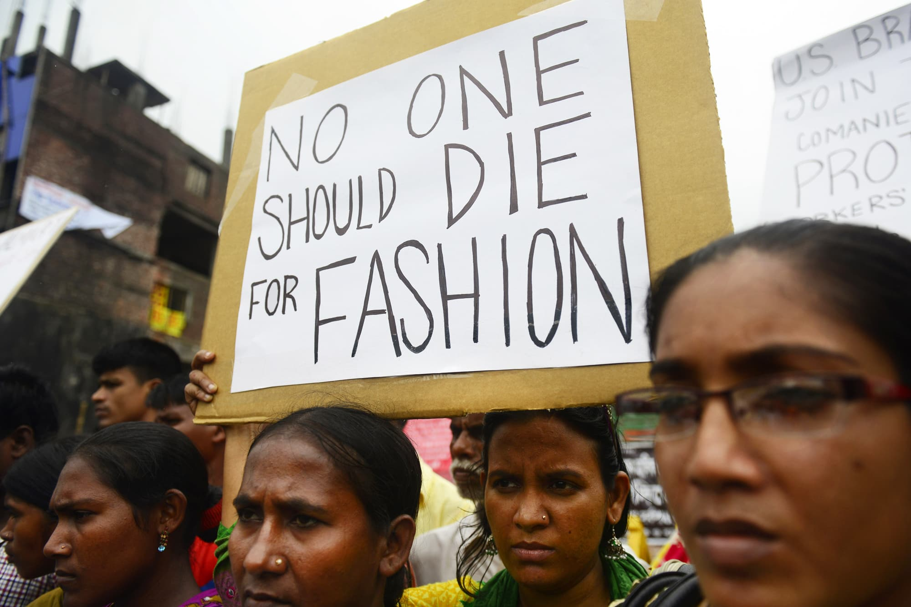
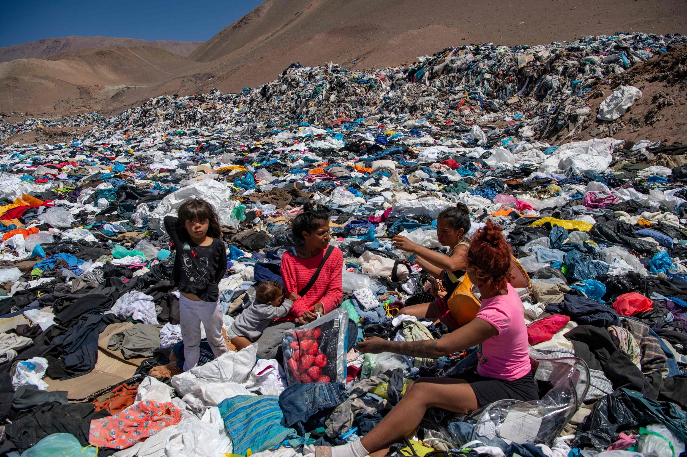
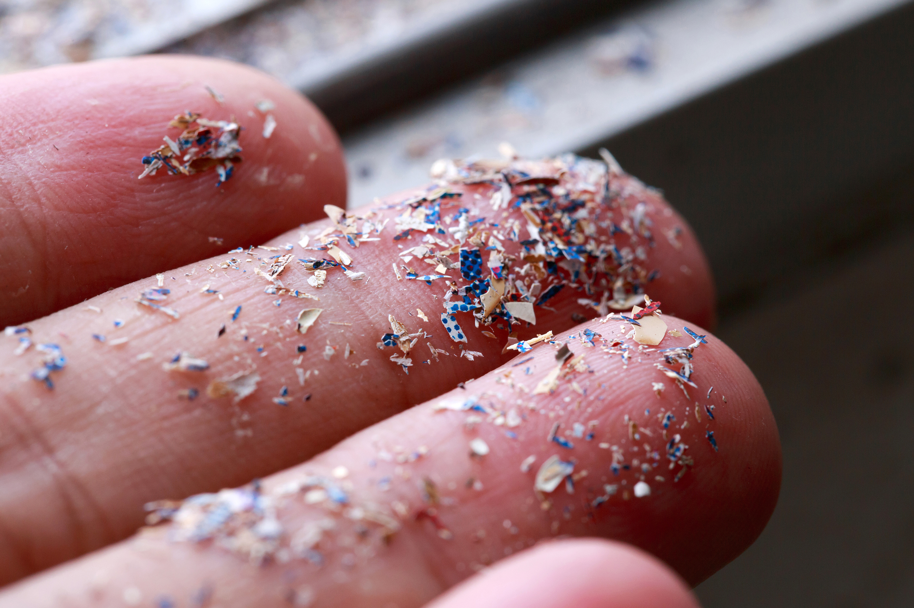

1 / 5

“93% of brands surveyed by the Fashion Checker aren’t paying garment workers a living wage.” (Fashion Checker, 2020)
2 / 5

“68% of fast fashion brands don’t maintain gender equality at production facilities.” (Ethical Fashion Guide, 2019)
3 / 5

“Nearly 70 million barrels of oil are used each year to make the world’s polyester fiber, which is now the most commonly used fiber in our clothing. But it takes more than 200 years to decompose.” (Forbes, 2015)
4 / 5

"Fashion accounts for 20 to 35 percent of microplastic flows into the ocean." (The State of Fashion, McKinsey 2020)
5 / 5
"By 2030, global apparel consumption is projected to rise by 63%, from 62 million tons today to 102 million tons—equivalent to more than 500 billion additional T-shirts." (Environmental Audit Committee, 2019)